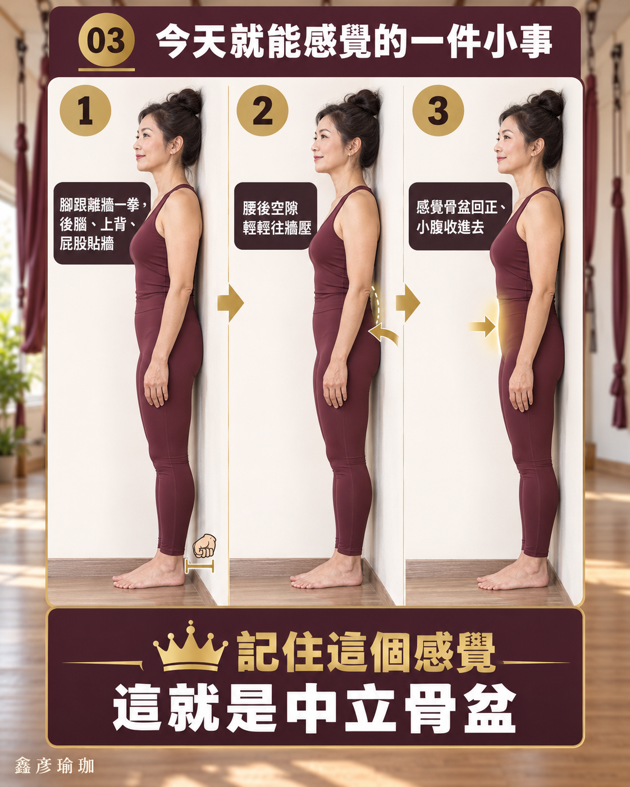

骨盆前傾就等於小腹凸？先看懂骨盆位置與核心用力的真實關係
- 小腹一直凸、腰容易痠，常被歸咎於骨盆前傾，但兩者不一定是絕對等號。
- 腹壁深層肌力不足、呼吸模式偏淺、消化脹氣與骨盆傾斜，都可能讓下腹顯得突出。
- 長時間久坐使髖前側髂腰肌偏緊、臀部與腹橫肌被動拉長，是常見的骨盆前傾誘發因素。
- 單純用力縮小腹或猛做仰臥起坐，容易增加腹壓與腰椎負擔，應從放鬆髖前側與建立中立排列著手。
明明不算胖，小腹卻總是凸一塊；站久了腰又容易發痠。許多人努力縮小腹、拚命做仰臥起坐，卻發現下腹依舊往前推，甚至腰越練越緊。很多人第一反應是「我是不是骨盆前傾了？」但骨盆前傾到底是什麼？它真的和小腹凸劃上等號嗎？
骨盆前傾就等於小腹凸嗎？先看懂身體的立體支撐
把骨盆想像成支撐軀幹與內臟的地基。在站姿中，當骨盆相對於股骨過度向前傾斜時，腰椎的前凸弧度會隨之加大，腹部深層臟器在重力作用下更容易向前推擠，使下腹在視覺上顯得突出，臀部也往後翹起。
然而，「小腹凸」並非只有骨盆前傾一個成因。腹壁張力不足（如腹橫肌低活化）、骨盆底肌支撐力、日常習慣性的胸式短淺呼吸（橫膈膜活動受限使腹內壓向下前推擠）、消化脹氣或皮下脂肪分佈，都是常見影響因素。如果未經整體評估就將所有小腹突出單純歸咎於骨盆前傾，往往會用錯努力方向。
許多人在意小腹時，習慣用力「吸氣憋肚子」，這往往只是收緊了表層的腹直肌，甚至讓呼吸變淺、增加胸腔與腰椎壓力。深層的腹橫肌與骨盆底肌並未得到協同啟動，一旦放鬆，肚子依然會往前推，還容易累積下背緊繃。

為什麼久坐族容易有骨盆前傾傾向？
現代人長時間坐在椅子上，髖關節長時間處於屈曲狀態。位在髖部前側深處的髂腰肌（Iliopsoas）長期處於縮短狀態，久而久之容易失去彈性；同時，臀大肌長時間處於被動拉長與受壓狀態，深層核心也缺乏主動支撐。
當站起身時，緊繃的髖前側像一條收緊的纜繩，將骨盆上緣往前下方拉扯；而後側拉住骨盆的臀肌與核心力量若未即時跟上，骨盆就容易順著拉力前傾，下背豎脊肌便得被迫整天緊繃出力來維持上半身直立。
找回骨盆中立：從釋放張力與協同啟動開始
要改善骨盆前傾與伴隨的小腹突出感，重點不是「硬把骨盆扳平」，而是：釋放緊縮的髖屈肌群，並重新引導臀部與深層核心協同用力。
壁繩瑜伽在這類體態調整中提供很實用的輔助。藉由壁繩的懸掛支撐，練習者能在站姿或半懸掛狀態下，安全且深層地延展骨盆前側與大腿根部，避免因為下肢肌力不足而用下背代償代折；同時在繩子的穩定反饋下，幫助練習者更清晰地體會到「腹橫肌微收、臀肌自然啟動」的骨盆中立感。
想了解自己的站姿與骨盆排列傾向？
AI 體態檢測以 2D 正側面站姿拍攝為基礎，量化耳、肩、髖、膝、踝的幾何參考線，幫助你與老師當面釐清日常站立受力習慣，找出適合的練習起點。（非醫療診斷或骨骼角度量測）
預約首次 NT$299 AI 體態檢測今天就能做的小觀察：靠牆感受骨盆中立
找一面平整牆面，雙腳向前離牆約一個拳頭寬，後腦勺、上背與臀部輕貼牆面。此時腰部後方通常會有一道自然空隙。
試著在吐氣時，專注將肚臍輕輕向後收向脊椎，感受骨盆稍微回到較平整的位置，腰後空隙縮減至約手掌厚度即可（切勿用力將腰部完全壓死在牆上，那會造成過度後傾與駝背代償）。保持正常呼吸，感受下腹深層自然內收、身體向上延伸的穩定感。這就是日常站姿中可參考的骨盆中立感知。

本文為體態與姿勢的一般衛教與練習分享，非醫療診斷或治療。若有持續疼痛、腰椎滑脫、椎間盤突出或特殊病史，請先諮詢合格醫療專業人員。
常見問題
骨盆前傾真的就等於小腹凸嗎？
不一定。小腹凸可能受多種因素影響，包括腹橫肌等深層核心張力、呼吸模式、消化脹氣、脂肪分佈，以及骨盆的前後傾斜角度。骨盆前傾會讓腹部內容物在視覺上往前推，是常見的體態影響因素之一，但兩者不能劃上絕對的等號。
為什麼長時間久坐容易出現骨盆前傾的傾向？
長時間處於坐姿時，髖關節維持屈曲狀態，前側的髂腰肌等髖屈肌群容易維持縮短與緊繃；同時臀大肌與深層核心肌群長時間處於被動拉長且低活化狀態。站起時若髖前側缺乏延展性，骨盆就容易被向前下拉，形成前傾傾向。
為什麼用力縮小腹或狂做仰臥起坐往往沒有改善？
許多人縮小腹時只是用力憋氣、繃緊表層的腹直肌，反而增加腹壓與腰椎負擔，並沒有真正啟動穩定骨盆的深層腹橫肌與骨盆底肌。若骨盆排列未回到較平衡的中立位置，單靠表層腹肌硬縮很難改變腹部前推的體態力學。
壁繩瑜伽如何協助骨盆回到較平衡的中立排列？
壁繩能提供穩定的懸掛支撐與承重輔助，讓練習者在不對下背施加過度壓力的前提下，安全地伸展並釋放緊縮的髖前側肌群；同時藉由繩子的反作用力，引導身體在站姿或懸掛中喚醒臀部與深層核心，逐步建立骨盆中立的動作感知。
在家靠牆練習骨盆中立感，有什麼注意事項？
靠牆站立時，雙腳離牆約一個拳頭寬，後腦、上背與臀部輕貼牆面；吐氣時專注將肚臍往脊椎方向輕輕收攏，讓腰後空隙縮小至約手掌厚度即可。切勿用力將下背死命壓平貼牆，那會變成過度骨盆後傾與彎腰代償；保持自然呼吸、感受骨盆平穩承托才是重點。